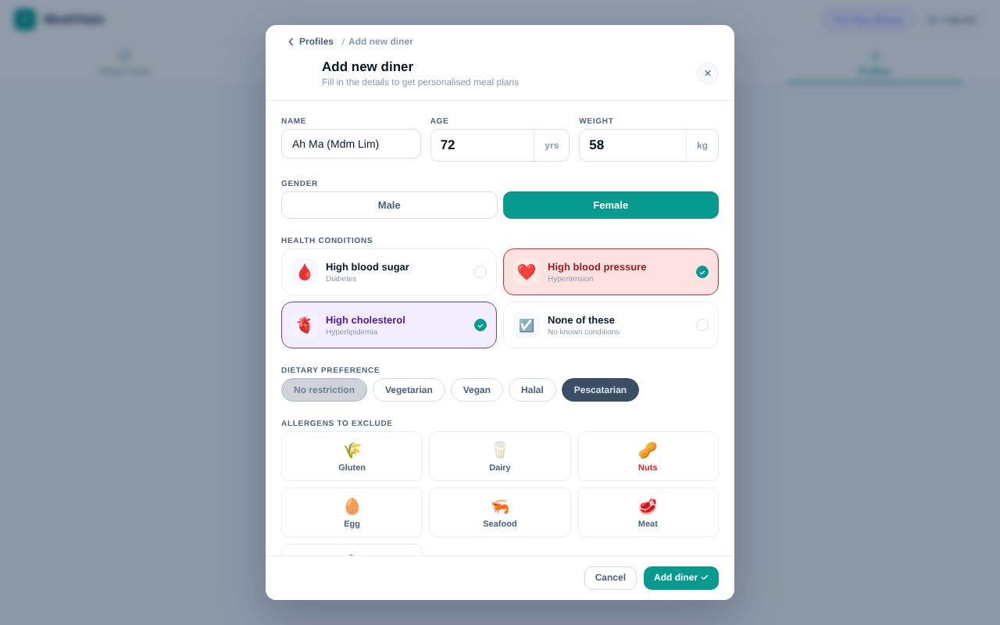
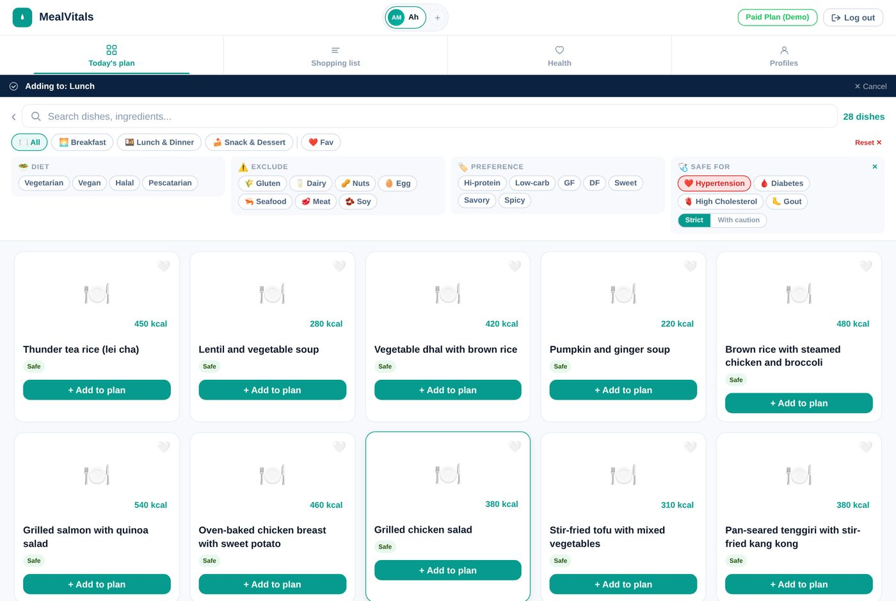
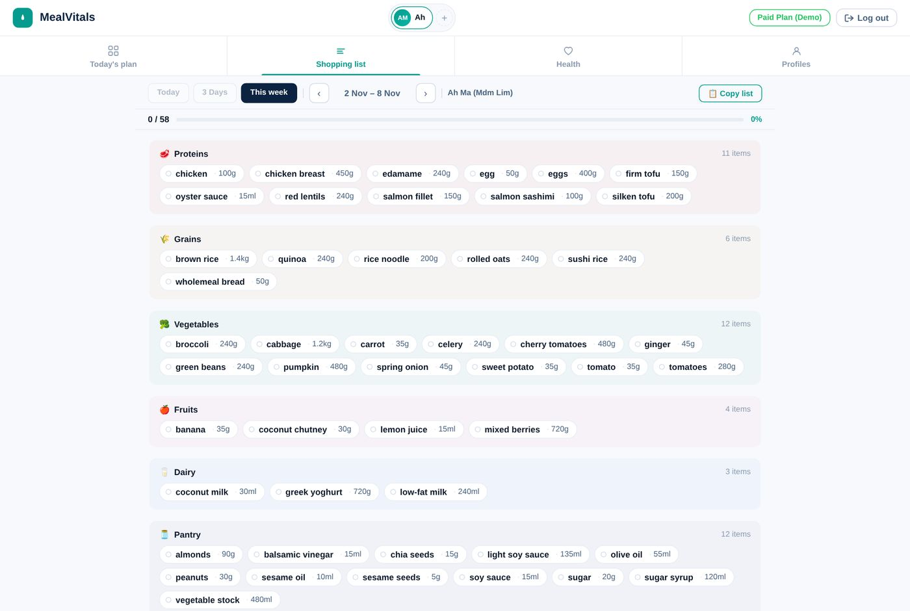
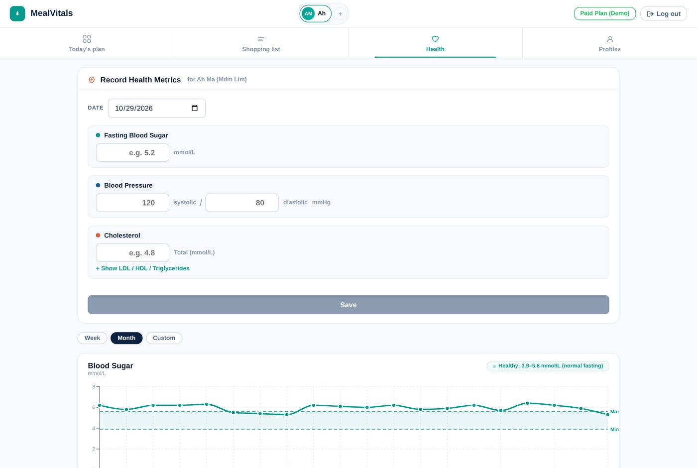
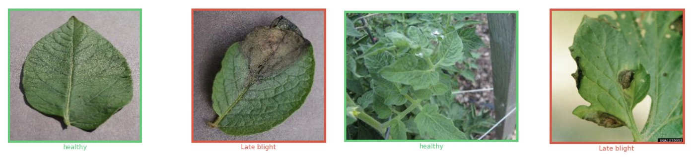
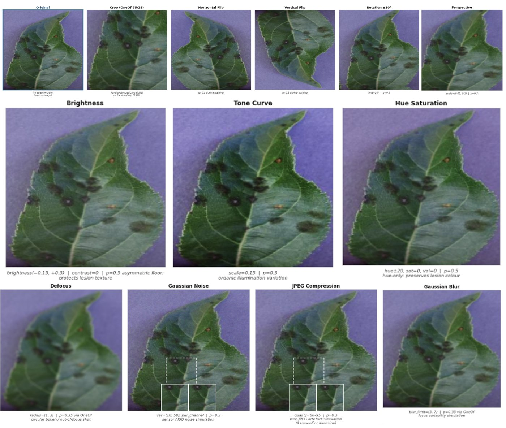
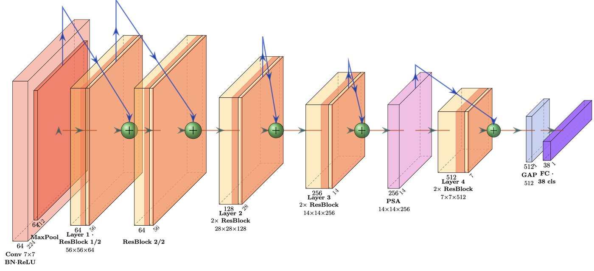
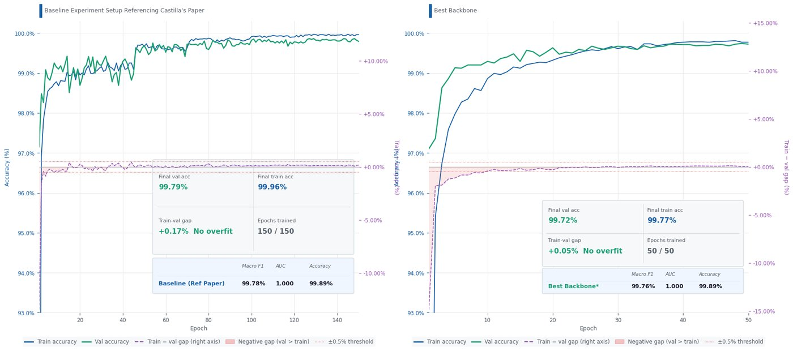
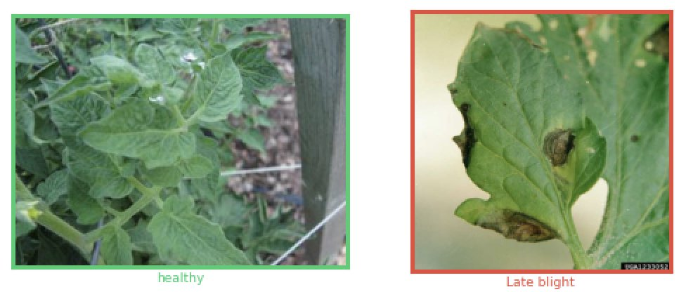
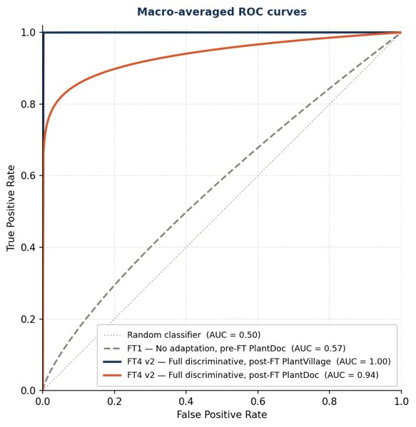

- React
- FastAPI
- PostgreSQL
- OR-Tools
MealVitals
A health-aware weekly meal planner that auto-fills meals with a constraint solver and builds the grocery list.
View ProjectI love to learn, build, and ship data-driven things.
Explore my projectsA health-aware weekly meal planner that auto-fills meals with a constraint solver and builds the grocery list.
View ProjectClassify 38 plant diseases from leaf images using ResNet-18 with Pyramid Squeeze Attention, with an accuracy of 99.9%.
View ProjectMarket-to-table meal planning for Singaporeans managing chronic conditions, and the caregivers who cook for them.
About one in three Singapore residents has hyperlipidaemia or hypertension, and awareness campaigns have not turned into better daily food choices. The target population is the 1.1 million residents aged 18+ diagnosed with or at risk of chronic conditions, plus the caregivers who plan their meals. Three gaps stand in the way:
Make dietary management easy to stick to: turn a diner's health profile, nutrient limits and food preferences into a week of meals and a grocery list, automatically. MealVitals recommends meals; it does not give medical advice.
Six features, each mapped to the gap it closes. Clips and screenshots are from the running app.




ResNet-18 with Pyramid Squeeze Attention, trained on lab images and adapted to real field photos.
Spotting plant disease from a leaf photo means reading subtle cues: lesion patterns, texture, colour shifts and shape changes that differ by disease stage. The training data is PlantVillage, 54,305 lab images across 14 species and 38 classes; the real test is PlantDoc, 2,578 photos taken in the field. Three gaps stand in the way:
Test whether a simple ResNet-18, trained the way Castilla et al. (2022) trained their diabetic retinopathy baseline, can reach a high AUC on 38-class plant disease classification, and then measure how far discriminative fine-tuning closes the gap between lab images and field images.
Six steps in the order they were built, each mapped to the gap it closes.





